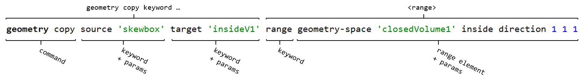

范围短语
术语 范围短语 是更明确描述性的说法，指本文档其他各处通常所称的 范围。构成范围短语的各组成部分（range 关键字 + 范围元素）在命令签名中表现为 <range>，如下图所示：


命令上方的括号表示 复制几何对象命令（geometry copy） 命令的命令签名。命令下方的括号把该命令的本次实例分解为其组成部分。当命令签名表示 <范围（range）>（上方括号）时，它总是以 range 关键字开头并至少含一个范围元素（如下方括号所分解）。<范围（range）> 还可包含可选逻辑关键字或 extent 关键字（尽管上例中均未示出）。
就 范围元素 而言，主要需注意：范围元素以初始 range 关键字所接受的元素关键字开头（清单见 范围短语关键字参考（Range Phrase Keyword Reference）），并通常在以下情形结束：
- 其所有参数均已指定，或
- 当引入新的范围元素关键字时，或
- 若它以
not关键字结尾（更多信息见 范围短语中的逻辑运算（Logical Operations in A Range Phrase））。
| 这些内容对您有帮助吗？… | FLAC3D © 2019, Itasca | 原文更新于 2020 年 10 月 8 日 |